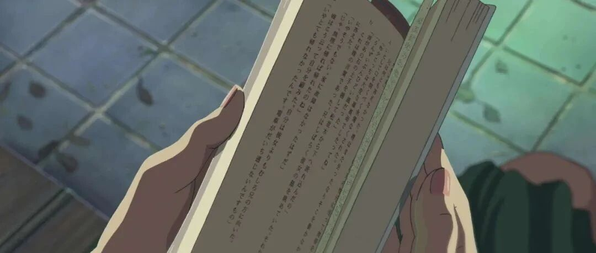

干货来了！这样做错题集太高效~


1、拿取方便：吃饭、睡觉、什么时候看都行。
2、不僵化记忆：随机提取错题，打乱固有记忆，打通你的任督六脉。
3、检测效果好：正面写错题，反面写答案。每次复习都只看正面，做完再看反面，实实在在检测你会or不会。


先准备错题

反面写解析

分层收纳

用到的工具 ： 剪刀、错题打印机（或者手抄）、小卡片、分层收纳袋。



1、拿取方便：吃饭、睡觉、什么时候看都行。
2、不僵化记忆：随机提取错题，打乱固有记忆，打通你的任督六脉。
3、检测效果好：正面写错题，反面写答案。每次复习都只看正面，做完再看反面，实实在在检测你会or不会。
先准备错题
反面写解析
分层收纳